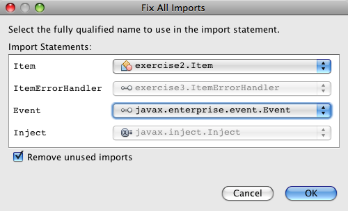

Apache NetBeans
Apache NetBeansLatest release
使用 CDI 中的事件
| This tutorial needs a review. You can open a JIRA issue, or edit it in GitHub following these contribution guidelines. |
撰稿人：Andy Gibson
上下文和依赖关系注入
JSR-299 指定的上下文和依赖关系注入 (CDI) 是 Java EE 6 的一个组成部分，提供了一个体系结构，以允许 Java EE 组件（例如 Servlet、企业 Bean 和 JavaBeans）在具有明确定义范围的应用程序生命周期内存在。此外，CDI 服务允许 Java EE 组件（例如 EJB 会话 Bean 和 JavaServer Faces (JSF) 受管 Bean）注入并通过触发和观察事件以松散耦合的方式进行交互。
本教程基于 Andy Gibson 发布的博客，标题为：CDI 入门指南，第 3 部分 - 事件。它演示了如何利用 Java EE 事件_的概念，即用一种维护生成器和观察器之间的分离代码的方式，来产生和订阅（即_观察）在应用程序中发生的事件。使用 javax.enterprise.event.Event 类创建事件，并使用 CDI 的 @Observes 标注订阅事件。
NetBeans IDE 为上下文和依赖关系注入提供了内置支持，包括在项目创建时构建 beans.xml CDI 配置文件的选项，为标注提供的编辑器和导航支持，以及用于创建常用 CDI 工件的各种向导。
要学完本教程，您需要具备以下软件和资源。
| 软件或资源 | 要求的版本 |
|---|---|
7.2、7.3、7.4、8.0、Java EE 版本 |
|
版本 7 或 8 |
|
Open Source Edition 3.x 或 4.x |
|
N/A |
|
使用事件
在上一教程应用 @Alternative Bean 和生命周期标注中，我们有一个应用程序，可以获取各项的列表、对各项进行验证并在发现无效项时采取特定操作。假定将来我们要展开系统以在发现无效项时处理发生的所有情况。这可能包括发送电子邮件、更改其他数据（例如取消订单）、或在文件或数据库表中存储拒绝列表。要完全分离实现，我们可以使用 Java EE 中的_事件_。事件由事件_生成器_发出，并由事件_观察器_订阅。与大多数 CDI 一样，事件的创建和订阅是类型安全的，且允许限定符决定观察器将观察哪些事件。
使用我们在本系列的上一教程中构建的应用程序，不需要进行任何更改即可实现此功能。我们还提供了 ItemErrorHandler（在上一教程中创建）的另一个实现，可以在每次处理项时发出事件。我们将此类命名为 EventItemHandler，将其注入 ItemProcessor，并使用 Notify 限定符选择它进行注入。

Figure 1. 在应用程序中使用 CDI 注入对类进行松散耦合
-
首先，从
cdiDemo3.zip文件提取样例启动项目（请参见上面的所需资源列表）。在 IDE 中打开项目，方法是选择 "File"（文件）> "Open Project"（打开项目）（Ctrl-Shift-O 组合键；在 Mac 上为 ⌘-Shift-O 组合键），然后从计算机上的相应位置选择该项目。 -
创建一个类，名为
EventItemHandler。单击 "New File"（新建文件）( ) 按钮，或者按 Ctrl-N 组合键（在 Mac 上为 ⌘-N 组合键）以打开文件向导。
) 按钮，或者按 Ctrl-N 组合键（在 Mac 上为 ⌘-N 组合键）以打开文件向导。 -
选择 "Java" 类别，然后选择 "Java Class"（Java 类）。单击 "Next"（下一步）。
-
键入 EventItemHandler 作为类名，然后输入 exercise4 作为包。
-
单击 "Finish"（完成）。新类和包生成，并在编辑器中打开此类。
-
按如下方式实现 EventItemHandler。
public class EventItemHandler *implements ItemErrorHandler* {
*@Inject
private Event<Item> itemEvent;
@Override
public void handleItem(Item item) {
System.out.println("Firing Event");
itemEvent.fire(item);
}*
}我们会注入 Event 实例，其中事件有效负载为 Item。事件有效负载是指从事件生成器传递到事件观察器的状态数据，在本例中传递的是已拒绝的项。当处理无效项时，我们会引发事件并传入接收的无效项。此基于事件的项处理程序的插入方式与其他任何项处理程序的方式相同，因此我们可以在任何需要的时候将其换入换出，还可以在测试过程中进行替换。
-
修复所有导入。在编辑器中右键单击并选择 "Fix Imports"（修复导入），或者按 Ctrl-Shift-I 组合键（在 Mac 上按 ⌘-Shift-I 组合键）。请务必选择
javax.enterprise.event.Event作为Event类的全限定名称。

Figure 2. 右键单击编辑器，然后选择
在 Event 上按 Ctrl-空格键以查看该类的 Javadoc 定义。另外，还定义了上面使用的 fire() 方法。

Figure 3. 按 Ctrl-空格键可查看有关 API 中类的 Javadoc 文档
-
创建一个限定符，名为
Notify。（使用 CDI 中的注入和限定符对限定符进行了介绍。） -
单击 "New File"（新建文件）(
) 按钮，或者按 Ctrl-N 组合键（在 Mac 上为 ⌘-N 组合键）以打开文件向导。 -
选择 "Context and Dependency Injection"（上下文和依赖关系注入）类别，然后选择 "Qualifier Type"（限定符类型）。单击 "Next"（下一步）。
-
输入 Notify 作为类名，然后输入 exercise4 作为包。
-
单击 "Finish"（完成）。新的
Notify限定符在编辑器中打开。
@Qualifier
@Retention(RUNTIME)
@Target({METHOD, FIELD, PARAMETER, TYPE})
public @interface Notify {
}-
将
@Notify标注添加到EventItemHandler。
*@Notify*
public class EventItemHandler implements ItemErrorHandler {
...
}我们创建了一个 @Notify 限定符标注为注入标识此错误处理程序，并可以通过将其添加到注入点以在我们的 ItemProcessor 中使用。
-
在
exercise2.ItemProcessor中，将@Notify标注添加到EventItemHandler的注入点。
@Named
@RequestScoped
public class ItemProcessor {
@Inject @Demo
private ItemDao itemDao;
@Inject
private ItemValidator itemValidator;
@Inject *@Notify*
private ItemErrorHandler itemErrorHandler;
public void execute() {
List<Item> items = itemDao.fetchItems();
for (Item item : items) {
if (!itemValidator.isValid(item)) {
itemErrorHandler.handleItem(item);
}
}
}
}（使用编辑器的提示为 exercise4.Notify 添加 import 语句。）
-
单击 "Run Project"（运行项目）(
 ) 按钮以运行项目。
) 按钮以运行项目。 -
在浏览器中，单击
Execute按钮，然后返回至 IDE，并在 "Output"（输出）窗口（Ctrl-4 组合键；在 Mac 上为 ⌘-4 组合键）中查看服务器日志。因为已构建的应用程序目前使用DefaultItemDao设置四个Item，然后在Item上应用RelaxedItemValidator，您会看到itemErrorHandler引发两次。

Figure 4. 查看显示在
目前我们还无法观察事件。不过，可以通过使用 @Observes 标注创建 observer 方法来解决此问题。只需执行此操作即可观察事件。为了进行演示，我们可以通过添加调用其 handleItem() 方法的观察器方法来修改 FileErrorReporter（已在上一教程中创建），以响应引发事件。
-
要使我们的
FileErrorReporter响应事件，请向类中添加以下方法。
public class FileErrorReporter implements ItemErrorHandler {
*public void eventFired(@Observes Item item) {
handleItem(item);
}*
...
}（使用编辑器的提示为 javax.enterprise.event.Observes 添加 import 语句。）
-
再次运行项目（F6；在 Mac 上为 fn-F6），单击
Execute按钮，然后返回至 IDE 并检查 "Output"（输出）窗口中的服务器日志。

Figure 5. 查看显示在
可以看到，事件与之前一样会在无效对象上引发，但是现在每次引发事件时都将保存项信息。您可能还会注意到，可以观察生命周期事件，因为为每个引发事件创建和关闭了 FileErrorReporter Bean。（有关诸如 @PostConstruct 和 @PreDestroy 等生命周期标注的讨论，请参见应用 @Alternative Bean 和生命周期标注。）
如以上步骤所示，@Observes 标注提供了一种简单的方式来观察事件。
还可以使用限定符标注事件和观察器，使观察器仅能够观察一个项的特定事件。有关演示，请参见 CDI 入门指南，第 3 部分 - 事件。
处理范围
就应用程序的现状而言，每次发出事件时都会创建一个 FileErrorReporter Bean。在这种情况下，我们不希望每次都创建新 Bean，因为我们不希望打开和关闭每个项的文件。但是仍然希望在启动进程时打开文件，然后在进程结束以后关闭文件。因此，需要考虑 FileErrorReporter Bean 的_范围_。
目前，FileErrorReporter Bean 没有定义范围。当没有定义范围时，CDI 使用默认的伪依赖型范围。实际上，这意味着在非常短的时间范围内创建和销毁 Bean，通常在方法调用期间进行。在当前方案中，Bean 是在引发事件过程中创建和销毁的。要解决此问题，我们可以通过手动添加范围标注来延长 Bean 的范围。我们会将此 Bean 标注为 @RequestScoped，以便在引发第一个事件过程中创建 Bean 时，此 Bean 在请求过程中一直存在。这还意味着，对于限定注入此 Bean 的任何注入点，将注入同一 Bean 实例。
-
在
FileErrorReporter中为javax.enterprise.context.RequestScoped添加@RequestScope标注和相应的 import 语句。
*import javax.enterprise.context.RequestScoped;*
...
*@RequestScoped*
public class FileErrorReporter implements ItemErrorHandler { ... }键入时按 Ctrl-空格键以调用编辑器的代码完成支持。通过代码完成选择项时，所有关联 import 语句都会自动添加到类中。

Figure 6. 在键入时按 Ctrl-空格键可调用代码完成建议
-
再次运行项目（F6；在 Mac 上为 fn-F6），单击
Execute按钮，然后返回至 IDE 并检查 "Output"（输出）窗口中的服务器日志。

Figure 7. 查看显示在
请注意，仅当引发第一个事件时创建 FileErrorReporter Bean，并在引发最后一个事件以后将其关闭。
INFO: Firing Event
*INFO: Creating file error reporter*
INFO: Saving exercise2.Item@48ce88f6 [Value=34, Limit=7] to file
INFO: Firing Event
INFO: Saving exercise2.Item@3cae5788 [Value=89, Limit=32] to file
*INFO: Closing file error reporter*事件是以模块化方式分离系统各部分的极好方法，因为事件观察器和生成器互相之间并不了解，它们也不需要进行任何配置来了解彼此。可以添加订阅事件生成器不知道观察器事件的代码片段。（如果不使用事件，则通常需要手动让事件生成器调用观察器。）例如，如果有人更新了订单状态，则可以添加一个事件，以电子邮件的形式发送给销售代表，或者如果技术支持问题已存在超过一个星期，则通知客户经理。此类规则可以在没有事件的情况下实现，但事件可以简化分离业务逻辑操作。此外，不存在编译时或构建时依赖关系。您只需要将模块添加到应用程序，这些模块便会自动开始观察和创建事件。
另请参见
有关 CDI 和 Java EE 的详细信息，请参见以下资源。